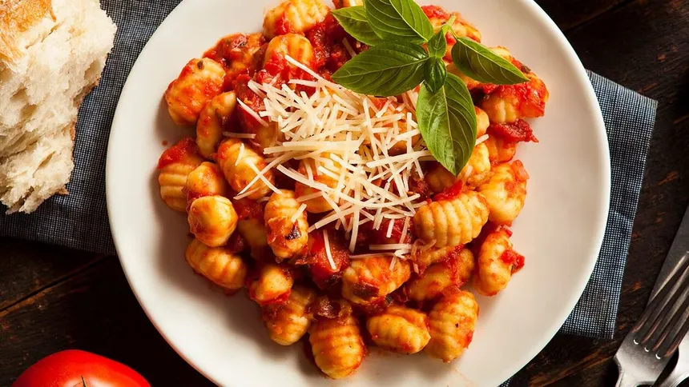

Hierve las papas enteras y con cáscara en agua con sal hasta que estén tiernas; esto evita que absorban exceso de agua. Pélanas en caliente y haz un puré fino sin grumos.
Mezcla el puré tibio con el huevo batido, sal, pimienta y nuez moscada. Incorpora la harina de a poco hasta formar una masa homogénea; amasar poco es clave para evitar que queden gomosos.
Estira la masa en rollos de 2 cm de diámetro y córtalos en trozos de 2-3 cm. Pasa cada ñoqui por un tenedor o tabla especial para darles la textura característica.
Hierve agua con sal y cocina los ñoquis en tandas; retíralos con una espumadera apenas suban a la superficie y déjalos cocinar un minuto más.